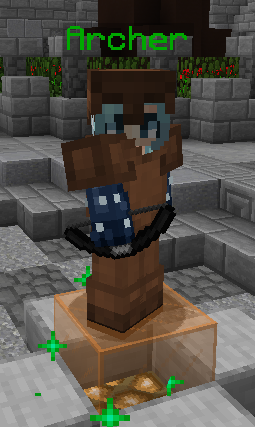
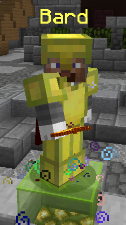
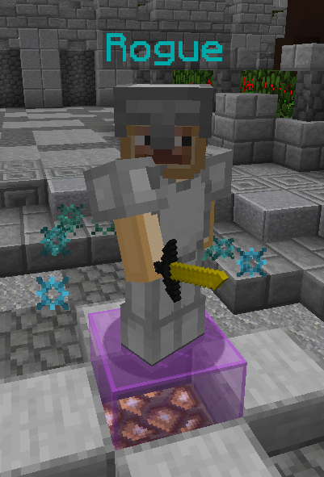
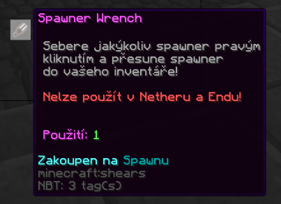
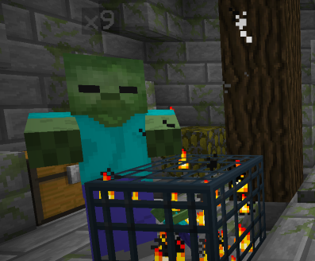

Úvod
Představujeme vám server iFactions Network
Tato prezentace je pouze informativní na seznámení se s našimi systémy,
neslouží jako Wikipedie.
Server je inspirovaný HCF servery, tak aby server zvládli i začátčníci
Styl serveru: Semi-hcf
Kit mapy: Protection 1 / Sharpness 1, No Debuff
Velikost mapy: 2000 x 2000
End portály: 750, -750 & -750, 750
Kothy: -200, -700 & 200, 700
TIP: Pokud jste Frakční/HCF servery nikdy nehráli,
doporučujeme zkouknout náš video tutoriál.
Classy
- Na serveru najdete 4 rozdílný classy (archer, bard, rogue, miner)
- Každá classa má své specifické vlastnosti a schopnosti
- Pro získání těchto class je třeba si nasadit určitý armor
- Po nasazení armoru obdržíte danou classu
Archer
Bard
Rogue
Kothy
- Jedná se o frakční eventy
- Nejsilnější frakce, která koth obsadí, obdrží Koth Loot
- Kothy probíhají automaticky každý den v 18:00
- Koth Loot můžete zjistít pomocí příkazu /koth loot [název_kothu]
Heal potiony
- Zjednodušený crafting Heal potionů
- Na crafting ingredience stačí pouze 1 gold nugget
- Rychlejší potiony
- Usnadnění PvP
StatTrak systém
- Můžete se těšit na StatTrak systém
- Všechny killy se vám započítavají a zaznemenávají na meči
Combat systém
- Na serveru se vám nikdo neodpojí v combatu
a ani neuteče do Safe zony (objeví se červená zeď)
Pokud se hráč odpojí v Combatu, tak zemře
- Combat Tag: 30 sekund
- Ender Pearl: 15 sekund
DTR systém
- Na serveru můžete dobývat nepřátelské frakce pomocí DTR systému
- Každá frakce má vlastní DTR, které zavísí na počtu hráčů ve frakci
- Maximální dosažitelný DTR je 5.50
- Za každou smrt se odečítá 1 DTR a Freezne se regen DTR na 30 minut
- Pokud DTR klesne pod 0, stává se frakce automaticky Raidable
a můžete tak vybrat veškeré nepřátelské území
- Regen DTR = 3 za hodinu (při vyšším počtů členů až 6 za hodinu)
TIP: Hlídejte si členy ve frakci, aby zbytečně neumírali, můžete se tak snadno stát raidable.
Custom End
- Na serveru naleznete custom end
- V endu si můžete nafarmit ender perly do pvp,
gunpowder na vaření elixírů a slimebally na sticky pistony
- Do endu se dostanete pomocí 2 end portálů z hlavního světa
Dynmapa
- Na serveru naleznete dynmapu,
pomocí dynmapy můžete vyhledat nepřátelská území
- Na dynmapě se můžete zaregistrovat a využívat tak online chat,
pokud jste například na mobilu mimo domov
Spawner wrench
- Na serveru můžete sebrat spawner, pomocí Spawner Wrenche
Gambling
- Na serveru můžete gamblit pomocí Gambling Key,
který získáte za emeraldy
Denní odměny
- Na serveru najdete denní odměny,
které si můžete vyzvednout pomocí /dailybonus
- Odměny se každým dnem stupňují,
každá vybraná odměna v řadě je o to víc vzácnější
Hlasování
- Na serveru můžete hlasovat, za každý hlas obdržíte odměnu
- Odměny se počtem hlasování stupňují,
za určitý počet hlasů obdržíte čím dál více vzácnější odměny
- Hráč s nejvíce hlasy na konci měsíce obdrží premium odměnu
Harvester
- Na serveru je zjednodušený sklízení
- Funkci aktivujete pomocí /harvester

Looting XP
- Na serveru looting přidá nejen více lootu, ale i zkušeností
- Získáte více XP pomocí lootingu, každý stupeň přidá více XP
Stackování mobů
- Na serveru najdete stackování mobů ze spawnerů
Sword systém
- Kliknutím pravým tlačítkem s mečem na beacon
si můžete přejmenovat svůj meč na náhodnou přezdívku
Síň slávy
- Na serveru najdete Síň slávy
- Hráči s největším počtem killů jsou zde vyvěšení
Další systémy
- Fast login pro hráče s Originálním minecraftem
pomocí příkazu /fastlogin
- Automatické zrušení Nether portálu,
pokud se teleportujete do zastavěného portálu
(stačí v portálu zůstat a sám se vypne)
- Zakázaný glitching pomocí ender perel
Support - Ticket systém
- Na našem komunitním discord serveru naleznete roomku #ticket_support,
kde si můžete založit roomku, do které budete mít přístup pouze vy a Admin Team
- V případě jakéhokoliv "závažného" problému se obraťte právě tam
- Tickety slouží pouze pro řešení závažných problémů!
Nesmyslný tickety jsou proto mazány
Závěr
Děkujeme vám za zhlédnutí naší prezentace
Doufáme, že se vám server bude líbit a pomůžete nám ho jako komunita udržet
Pokud budete mít ještě nějaké další dotazy ohledně nových systémů nebo serveru
jako takového, obraťte se na nás prostřednictvím našeho komunitního Discord serveru,
kde vám budeme poskytovat podporu 24/7